Электрические измерения
Прибор магнитоэлектрической системы
Для измерения силы тока и напряжения чаще всего используются приборы магнитоэлектрической системы. Измерительный механизм такого прибора представляет собой рамку из медного изолированного провода, помещенную между полюсами постоянного магнита. Когда через рамку течет постоянный ток, она поворачивается вокруг своей оси на тем больший угол, чем больше текущий через нее ток. Величину тока определяют по шкале прибора. При измерении напряжения измерительный механизм прибора подключают параллельно той цепи, где надо измерить напряжение. И в этом случае через рамку механизма течет ток, который будет тем больше, чем больше разность потенциалов в этой цепи, а по нему судят об измеряемом напряжении. При измерении сопротивления цепи или резистора измерительный механизм прибора включают последовательно с этим сопротивлением и батареей, и опять таки измеряют ток, который будет тем меньше, чем больше сопротивление. Таким образом с помощью прибора этой системы можно измерять токи (I) напряжения (U) и сопротивления (R).
Главное достоинство магнитоэлектрического измерительного прибора по сравнению с приборами других систем — равномерная шкала при измерении постоянных токов и сравнительно малый ток, при котором, стрелка измерительного механизма отклоняется до последнего деления шкалы. Наиболее распространены приборы с током полного отклонения стрелки 1000, 500, 200, 150 и 100 мкА. Чем меньше этот ток, тем точнее будут результаты измерений.
Желательно, чтобы максимальный ток микроамперметра, используемого для самодельного измерительного прибора, был не более 500 мкА, а его шкала возможно большой — с прибором, имеющим такую шкалу, удобнее работать, выше точность измерений, на ней больше места для нанесения дополнительных шкал. Малый ток полного отклонения стрелки и большую шкалу имеют, например, приборы типов М24, М265, М900 и некоторые другие.
Надо иметь в виду, что рабочее положение прибора (горизонтальное или вертикальное) должно быть таким, которое символически обозначено на его шкале, иначе возрастут погрешности измерений.
Измерение токов
Для измерения тока прибор включают в электрическую цепь последовательно (рис. 1), то есть в разрыв цепи, чтобы через прибор шел весь измеряемый ток. Измеряемый ток должен быть не больше тока полного отклонения стрелки измерительного прибора. В противном случае стрелка прибора будет «зашкаливать» и измерения станут невозможными и даже опасными — измерительный механизм прибора может выйти из строя.
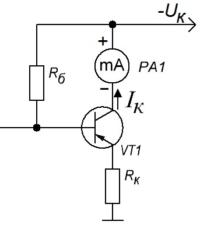
Чтобы с помощью того же прибора можно было измерить больший ток, чем тот, на который он рассчитан, параллельно его измерительному механизму включают резистор Rш (рис. 2). В этом случае измеряемый ток идет не только через микроамперметр mA, но и через резистор Rш, называемый в данном случае шунтом. Ток через измерительный прибор при этом уменьшается и стрелка прибора отклоняется на меньший угол. Таким способом измеряют токи, превышающие ток полного отклонения стрелки прибора.
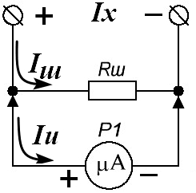
Чем меньше сопротивление шунта, тем меньше показания прибора P1, так как все большая часть измеряемого тока цепи ответвляется и идет через шунт. Подключая к прибору разные шунты, мы сможем измерять токи по крайней мере до нескольких ампер. Возможная схема такого многопредельного измерительного прибора показана на рис. 3. Предел измерений устанавливают переключателем S2.
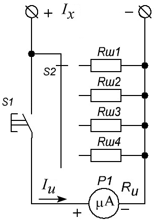
Такой прибор имеет недостаток: переключение пределов измерений нельзя производить под током, так как в момент, когда ползунок переключателя отойдет от одного контакта, но еще не коснется другого, соседнего, весь измеряемый ток пройдет через микроамперметр и может испортить его. Чтобы этого не случилось, в прибор введена кнопка S1, с помощью которой микроамперметр во время измерений подключают к шунтам. Когда кнопка не нажата, микроамперметр отключен.
Еще один вариант амперметра показан на рис. 4. Здесь применен универсальный шунт, постоянно подключенный к микроамперметру. Но в этом случае отпадает возможность непосредственного включения микроамперметра P1 в измеряемую цепь.
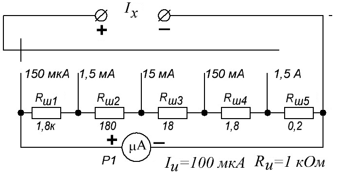
Расчет шунта
Исходными при расчете сопротивлений шунтов служат ток полного отклонения Iи и сопротивление рамки Rи микроамперметра, что обычно указывается на его шкале. Если эти параметры прибора неизвестны, измерить их можно по схеме, показанной на рис. 5. Чтобы измерить ток полного отклонения стрелки, соединяют последовательно образцовый (эталонный) микроамперметр P1 (или миллиамперметр), измеряемый прибор P2, источник питания напряжением 1,5 — 4,5 В, резистор R1, ограничивающий ток в цепи, и переменный резистор R2 для регулирования тока в измерительной цепи.
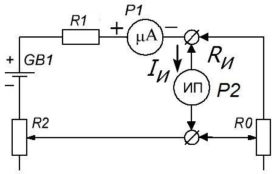
Сопротивление резистора R1 подбирают так, чтобы при полностью введенном резисторе R2 стрелка измерительного прибора P2 отклонилась почти на всю шкалу. Затем резистором R2 стрелку измеряемого прибора ИП устанавливают точно на последнее деление шкалы и по образцовому прибору узнают его ток полного отклонения Iи.
Для измерения сопротивления Rи параллельно прибору P2 включают переменный резистор R0 и, подбирая его сопротивление, добиваются, чтобы ток через измеряемый прибор уменьшился точно в два раза по сравнению с образцовым прибором P1. В этот момент Rи=R0. Остается измерить омметром сопротивление резистора R0 и тем самым определить сопротивление Rи.
Может возникнуть вопрос: а нельзя ли измерить сопротивление Rи непосредственно омметром? Нельзя, так как ток омметра в большинстве случаев будет значительно превышать максимально допустимый ток прибора.
Итак, параметры Iи и Rи известны. Теперь надо выбрать значения пределов Iп измерений и рассчитать шунты будущего прибора. Если прибор делают по схеме на рис. 3, то расчет сопротивления шунта каждого предела измерений производят по формуле:
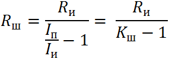
Величины, подставляемые в формулы, должны быть в основных единицах — вольтах, амперах и омах.
Расчет универсального шунта (рис. 4) ведут иначе. Допустим, что выбраны пределы измерений 150 мкА, 1,5 мА, 15 мА, 150 мА и 1,5 А. Ток полного отклонения стрелки прибора 100 мкА, сопротивление рамки прибора 1000 Ом. Рассуждаем следующим образом. На первом пределе измерения (150 мкА) весь шунт подключен параллельно прибору, следовательно его сопротивление должно быть:
Rш=1000:(150:100-1)=2000 [Ом]
Теперь можно рассчитать отдельные составляющие шунта:
Rш1= Rш- (Iп1:Iп2)Rш= 2000-(150:1500)·2000 = 1800 [Ом]
Rш2= Rш-Rш1- (Iп1:Iп3)Rш= 2000-1800-(150:15000)·2000 = 180 [Ом]
Rш3= Rш-Rш1-Rш2- (Iп1:Iп4)Rш= 2000-1800-180-(150:150000)·2000 = 18 [Ом]
Rш4= Rш-Rш1-Rш2- Rш3(Iп1:Iп5)Rш= 2000-1800-180-18-(150:1500000)·2000 = 1,8 [Ом]
Rш5=Rш- Rш1- Rш2- Rш3- Rш4= 200 - 1800 - 180 - 18 - 1,8 = 0,2 [Ом]
Отметим, что готовые шунты дополнительно подгоняют, ибо ошибка в доли ома при расчете и изготовлении приводит к значительной погрешности будущего прибора. Ток предела контролируют по образцовому прибору. Начинать подгонку следует с шунта, имеющего наибольшее сопротивление (наименьший предел измерений).
Измерение постоянных напряжений
При измерении напряжения вольтметр (милливольтметр) включают параллельно участку цепи, на котором надо измерить напряжение (рис. 6). При этом часть тока цепи ответвляется в измерительный прибор PU, вызывая отклонение его стрелки. Таким образом, вольтметр по существу представляет собой амперметр (миллиамперметр), шкала которого проградуирована в единицах напряжения (вольтах, милливольтах).
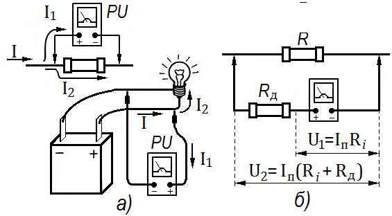
Например, микроамперметр М24 с током полного отклонения Iп=100 мкА и внутренним сопротивлением Ri = 670 Ом можно использовать как милливольтметр с пределом измерения напряжения, равным 67 мВ, так как при полном отклонении стрелки падение напряжения на зажимах микроамперметра (т. е. на внутреннем сопротивлении) составит 0,067 В, или 67 мВ:
Ui = IпRi = 100·10-6·670 = 0,067.
Чем больше внутреннее сопротивление микроамперметра, тем большее напряжение может быть измерено с его помощью. Так как внутреннее сопротивление определяется конструкцией прибора, и изменить его нельзя, для измерения большого напряжения последовательно с микроамперметром включают добавочный резистор Rд.
В этом случае при токе полного отклонения стрелки падение напряжения на резисторе R составит
U2=Iп(Ri+Rд)
и будет больше падения напряжения на внутреннем сопротивлении микроамперметра
U1=IпRi.
Разделив U2 на U1, получим формулу для расчета сопротивления добавочного резистора:
n=U2/U1=Iп(Ri+Rд)/IпRi=(Ri+Rд)/Ri,
откуда
Rд= (n - 1)Ri,
где n — число, указывающее, во сколько раз следует увеличить предел измерения напряжения.
Например, если при измерении напряжения упомянутым выше микроамперметром М24 стрелка должна полностью отклоняться при напряжении в 1 В, то
n = 1 : 0,067 ≈ 15,
а сопротивление добавочного резистора Rд должно составлять 9380 Ом, или 9,38 кОм:
Rд=(15—1)Ri = 14·670 = 9380.
Если использовать не один, а несколько добавочных резисторов, можно изготовить многопредельный вольтметр. Переключение на больший предел измерения напряжения (например, с 1 В на 10 В) осуществляется подключением последовательно с микроамперметром добавочного резистора Rд3, имеющего большее сопротивление, чем Rд4.
Добавочные резисторы многопредельного вольтметра могут быть включены так, как показано на рисунке 7.
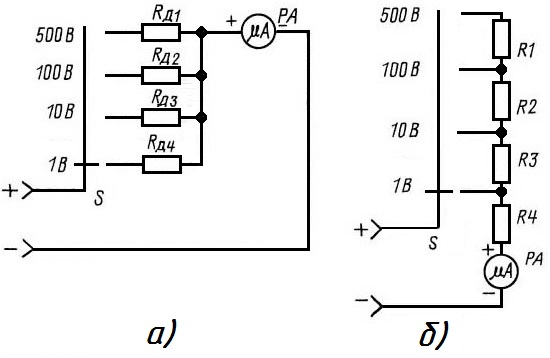
Роль добавочных резисторов в этой схеме выполняют для пределов измерения:
- 1 В — R4;
- 10 В — последовательно соединенные R3 и R4;
- 100 В — R2, R3 и R4;
- 500 В — вся цепочка из последовательно соединенных резисторов R1l, R2, R3 и R4.
Рассмотренные варианты многопредельных вольтметров позволяют измерять лишь напряжения в цепях постоянного тока. При этом нужно соблюдать полярность подключения вольтметра к участку электрической цепи, в противном случае произойдет «зашкаливание» стрелки прибора влево.
В случае включения добавочных резисторов по схеме на рис. 6,а сопротивления добавочных резисторов рассчитывают по формуле:
Rд=Uп : Iп - Ri
где
Uп — номинальное напряжение данного предела измерения.
Iп — ток полного отклонения прибора.
Для вольтметра по схеме на рис. 6,б добавочные резисторы рассчитывают по формулам:
Rд1=(Uп1-IпRi):Iп,
Rд2=(Uп2-Uп1):Iп,
... ... ...
Rдk=(Uпk-Uпk-1):Iп,
где
Rдk - сопротивление добавочного резистора на k-пределе ;
Uпk - номинальное напряжение k-предела;
Uпk-1 - номинальное напряжение предыдущего предела измерении.
Измерение переменных токов и напряжений
Чтобы микроамперметр использовать для измерения переменных токов и напряжений, их предварительно надо выпрямить. Выпрямление производят при помощи полупроводниковых диодов. На рис. 8,а показана схема однонолупериодного выпрямителя. Выпрямителем является диод VD1, который пропускает через прибор прямую волну измеряемого тока. Обратная полуволна, для которой диод VD1 закрыт, проходит через диод VD2. Последовательно с ним часто включают резистор R сопротивлением, равным сопротивлению микроамперметра.
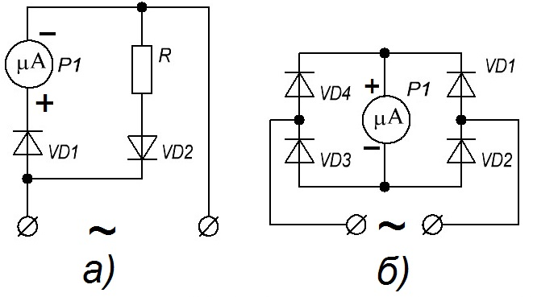
а) - с однополупериодным выпрямителем,
б) - с двухполупериодным выпрямителем.
Недостаток прибора с одпополупериодным выпрямителем — низкая чувствительность, так как среднее значение выпрямленного тока не может быть больше половины амплитуды измеряемого тока. Преимущество же такого прибора — более линейная шкала по сравнению со шкалами приборов, выпрямители которых построены по двухполупериодным схемам, например, по мостовым (рис. 7,б).
В остальном схемы миллиамперметра и вольтметра переменного тока аналогичны схемам таких же приборов для измерения постоянных токов и напряжений. Шунты и добавочные резисторы в таких приборах включают до выпрямителя (рис. 9). Но градуировка приборов для измерений переменных токов и напряжений, к сожалению, не совпадет с градуировкой шкал приборов постоянного тока. Объясняется это тем, что характеристики полупроводниковых выпрямителей нелинейны, особенно при малых напряжениях. Поэтому ток через магнитоэлектрический прибор не прямопропорционален измеряемым переменным токам и напряжениям.
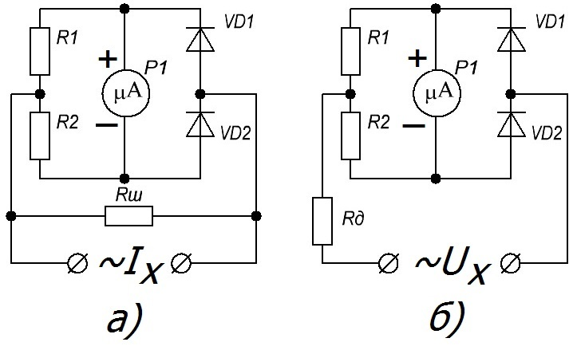
Показания измерительных приборов выпрямительной системы зависят от частоты измеряемых токов. Низкочастотная граница этих приборов может быть 10—20 Гц. При токах более низкой частоты стрелка магнитоэлектрического прибора заметно колеблется, так как через него течет пульсирующий ток и в промежутках между импульсами стрелка под действием возвратных пружин стремится вернуться в нулевое положение. При измерении токов высокой частоты возникает шунтирование p-n-переходов полупроводниковых диодов емкостями этих переходов, в результате чего величина выпрямленного тока уменьшается. Показания прибора при этом также уменьшаются. Этот процесс действует при измерении токов всех частот, и если говорить строго, то градуировка шкалы будет соответствовать только току той частоты, на которой она была произведена, но погрешности на низких частотах столь незначительны, что ими можно пренебречь, по крайней мере до частот 20—30 кГц.
Чтобы несовпадение шкал постоянного и переменного токов было незначительным, выпрямительный мост видоизменяют так, как показано на рис. 9, то есть диоды VD3 и VD4 (см. рис. 8,б) заменяют резисторами R1, и R2 сопротивлением в несколько килоом. Это, конечно, снижает чувствительность прибора.
Сопротивление добавочных резисторов и шунтов для измерения переменных токов несколько отличается от подобных резисторов прибора для измерения постоянного тока. Объясняется это тем, что при измерении переменного тока параллельно магнитоэлектрическому прибору включены шунтирующие его диоды. Поэтому расчет добавочных резисторов и шунтов для измерений переменного тока надо вести не на ток Iи, а на значение Iви, зависящее от схемы выпрямителя, параметров диодов и др. В любительских условиях все это определить трудно, поэтому лучше подобрать сопротивление добавочных резисторов и шунтов опытным путем.
Омметр
В соответствии с законом Ома
Rx=Ux/Ix.
Следовательно, если напряжение в измеряемой цепи поддерживать неизменным, то ток в ней будет определяться сопротивлением Rх, поэтому шкалу прибора можно проградуировать непосредственно в омах.
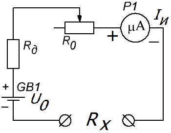
Схема простейшего омметра приведена на рис. 10. Она напоминает схему вольтметра. Сопротивление добавочного резистора Rд +R0 выбрано таким, чтобы при Rх=0 (зажимы Rх замкнуты накоротко) стрелка прибора отклонялась на всю шкалу. Резистором R0 компенсируют уменьшение напряжения разряжающейся батареи, которым стрелку прибора устанавливают точно на последнее деление шкалы, то есть на «нуль» шкалы омметра (при замкнутых накоротко зажимах Rх).
Если к зажимам Rх присоединить измеряемое сопротивление, то отклонение стрелки прибора, естественно, уменьшится, так как общее сопротивление, включенное в цепь магнитоэлектрического прибора, увеличится. Чем больше Rх, тем меньше отклонение стрелки. Наконец, при очень большом Rх стрелка вообще не отклонится (точнее — незначительно отклонится), указывая бесконечно большое сопротивление (∞). Таким образом, шкала омметра обратная: нуль справа, а "∞" слева; кроме того, она нелинейная — по мере приближения к "∞" градуировка шкалы сжимается.
Шкалу омметра можно отградуировать расчетным путем. В самом деле, при Rх=0 через магнитоэлектрический прибор протекает ток
Iи = U0/Roм
где Rом= Rи+Rд+Rо.
Как только к входным зажимам омметра будет подключено измеряемое сопротивление Rх, ток через прибор уменьшится:
Iх=U0:(Rом+Rх)
При бесконечно большом Rх, то есть при разрыве цепи, ток Ix=0. Понятие «бесконечно большое» Rх имеет относительный смысл и зависит от величины сопротивления Rд, то есть от предела, на котором происходит измерение; можно считать, что если Rх больше Rдв десять раз, то ток Iи уже равен нулю. Отношение токов Iи и Ixравно отношению сопротивлений Rоми Rом+Rх:
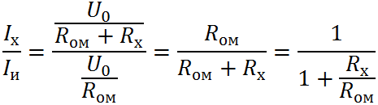
Производя вычисления, вы убедитесь, что при Rх=Rомток Iх=0,5Iи, стрелка прибора при этом устанавливается в середине шкалы.
Цену промежуточных делений шкалы омметра вычисляют следующим образом. Задаются значением Rх и определяют для него отношение токов Iх/Iи по приведенной выше формуле. Затем это отношение токов умножают на общее число делений шкалы микроамперметра, которую принимают за эталон, и тем самым определяют то деление, против которого надо поставить заданное значение Rх.
Например, зададимся Rх= 2Rом, тогда Iх/Iи=0,333. Если шкала прибора имеет 100 делений, то против отметки 0,333×100=33,3 надо нанести отметку 2 шкалы сопротивлений. Значение отметки 2, в омах, зависит от значения Rом, то есть от сопротивления добавочного резистора Rд. Например, если Rом=100 Ом, то точка 33,3 шкалы будет соответствовать значению Rом= 200 Ом, если Rом=1000 Ом, то Rх=2000 Ом и т. д.
Выбрав Rом и U0 можно построить омметр для измерения Rх в пределах от (0,3...0,1)Rом до (3—10)Rом. Чтобы изменить пределы измерений, нужно соответственно выбрать другие значения Rоми U0. При этом поступают также, как и при конструировании многопредельного вольтметра: включают добавочные резисторы Rд, каждый из которых в 10 раз больше предыдущего. Градуировка шкалы сопротивлений сохраняется неизменной, только ее показания надо будет увеличивать в 10 или в 100 раз. При этом надо будет увеличивать и напряжение U0.
Источники:
unradio.ru - Простейшие электрические измерения
stoom.ru - Измерение напряжения в цепях постоянного тока